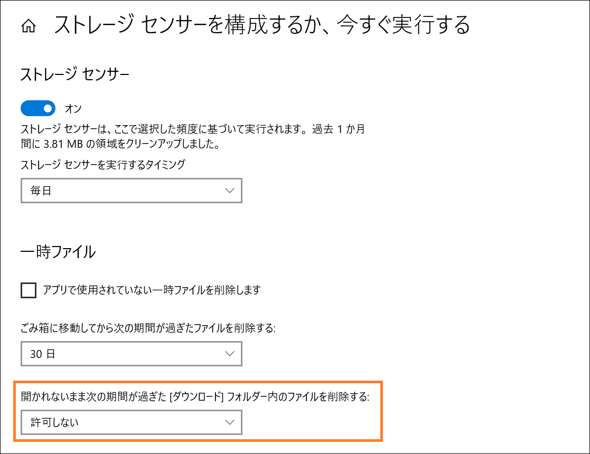

本記事は、マイクロソフト社員によって公開されております。
みなさん、こんにちは。
Windows サポート Storage & High Availability チームの平塚です。
今回のテーマは、ストレージ センサー（Storage Sence）を使って不要なファイルを整理する際に、[ダウンロード] フォルダー 内の対象ファイルが削除されない事象についての解説と回避策についてご案内をさせていただきます。
ストレージセンサーとは
ストレージ センサー（Storage Sence）とは、Windows 10 から実装されている “ごみ箱” や “一時ファイル” 内の不要なファイルを削除し、自動的にストレージの空き領域を増やすことができる機能です。
Windows の 設定アプリ から [システム] > [記憶域] > [ストレージ センサー] から設定することができ、ストレージ センサー を実行するタイミング（毎日 や 毎週 等）や 削除対象のファイルを指定することが可能です。
参考情報:
Storage Sense を使用してドライブ領域を管理する
事象
ストレージ センサーでは、[ダウンロード] フォルダー（C:\Users\<ユーザー名>\Downloads）のファイルを削除対象とすることが可能です。
今回は、[ダウンロード] フォルダーを削除対象にしているにも関わらず、[ダウンロード]フォルダー内のファイルが削除されない事象の原因についてご説明をさせていただきます。
補足: [ダウンロード]フォルダー内のファイルを削除する設定について
ストレージ センサーの、[開かれないまま次の期間が過ぎた [ダウンロード]フォルダー内のファイルを削除する] の設定に従い、[ストレージ センサーを実行するタイミング]で、ファイルが開かれないまま指定した期間（1日/14日/30日/60日から選択）が過ぎたファイルが削除されます。（既定では “許可しない” となっております）

原因
弊社へお問い合わせをいただいている事例としては、ストレージ センサー実行時、対象ファイルの “アクセス日時（LastAccessTime）” が更新され、削除対象から除外されていたことが主な原因でした。
以下、詳細についてご説明をさせていただきます。
ストレージ センサーの動作といたしましては、ストレージ センサー実行時に、”ファイルの更新日時（LastWriteTime）” および “アクセス日時（LastAccessTime）” が指定した期間を超えたファイルが削除対象となります。
このファイルの “アクセス日時（LastAccessTime）” は、基本的にはファイルを開いた際に更新されるものとなります。そのため、ストレージ センサーの説明にもあるように、ファイルを開かないまま期間が過ぎれば本来は削除対象となります。
しかしながら、Windows OSではファイルデータの読み出しは頻繁に行われるため、ファイルを開かない場合にも “アクセス日時” の情報が更新される場合があります。弊社で確認している事例としては、ウイルス対策ソフトのスキャンや検索機能を使用する等、様々な要因でアクセス日時の更新がされてしまう場合があります。
そのため、指定期間中にファイルを開いていない場合にも、知らぬ間に “アクセス日時” が更新されてしまい、ストレージ センサーの削除対象からも除外されてしまう可能性があります。
もし、ストレージ センサー動作時に、[ダウンロード] フォルダーのファイルが削除されない場合は、PowerShell から以下のコマンドを実行いただき、各ファイルの “アクセス日時” が更新されていないかご確認ください。なお、ファイルのプロパティからも “アクセス日時” は確認可能ですが、プロパティを開いただけでも、 “アクセス日時” は更新されてしまいますのでご注意ください。
1 | Get-Item "C:\Users\<ユーザー名>\Downloads\*" | Format-List -Property Name, CreationTime, LastWriteTime, LastAccessTime |
※ 実行結果の”LastAccessTime”が更新日時になります。
頻繁に “アクセス日時” の更新がされており、回避することが難しい場合、ファイルの “アクセス日時” の更新を無効にすることで回避することが可能です。
以下の通り、回避方法としてご案内いたします。
回避方法
回避方法としましては、OS側の設定として、ファイルの “アクセス日時” の更新を無効にし、不要な更新を抑制することで回避が可能です。
ファイルの編集作業や、強制的にアクセス日時を書き換えない限り、意図しないアクセス日時の更新を抑制できるため、基本的には “ファイルの更新日時” が規定の日数を超えたファイルがストレージ センサーによる削除対象となります。
なお、残念ながら、ストレージセンサーの動作としては、”ファイルの更新日時” および “アクセス日時” が指定期間を超えたファイルが削除対象となる動作自体を変更することはできません。
そのため、ファイルの “アクセス日時” の更新を無効にし、ストレージ センサーを利用する方法をご検討いただけたら幸いです。
ファイルの “アクセス日時” の更新は、fsutil のコマンドを使用して確認・変更が可能ですので、以下の通り、ご案内いたします。
現在の設定の確認方法
コマンド:
fsutil behavior query disablelastaccess
設定値:
DisableLastAccess = 0 (ユーザー管理、最終アクセス日時の更新が有効)
DisableLastAccess = 1 (ユーザー管理、最終アクセス日時の更新が無効)
DisableLastAccess = 2 (システム管理、最終アクセス日時の更新が有効)
DisableLastAccess = 3 (システム管理、最終アクセス日時の更新が無効)
設定の変更方法
コマンド:
fsutil behavior set disableLastAccess <0-3>
今回は、ユーザー管理の最終アクセス日時の更新を無効としますので、以下の手順で設定変更を実施ください。
1 | 1. "コマンドプロント" を管理者で実行します |
参考情報:
fsutil behavior
“アクセス日時” 無効化による影響について
本設定は、前述の通り OS の “アクセス日時” の更新を無効化する設定のため、ストレージ センサーのみに影響する設定ではありません。
ただ、”アクセス日時” 自体は、ファイルシステムによっては利用できない機能であることや、Windows Server ではデフォルトで無効化されている機能となります（クライアント OS につきましても、バージョンよってはデフォルトは無効となります）。
そのため、無効化による影響は少ないものと存じますが、念のため、お使いのアプリケーションや運用等の影響をご確認いただき、十分な検証の上、無効化をご検討いただけたら幸いです。
いかがでしたでしょうか。本投稿が少しでも皆様のお役に立てば幸いです。
本情報の内容（添付文書、リンク先などを含む）は、作成日時でのものであり、予告なく変更される場合があります。